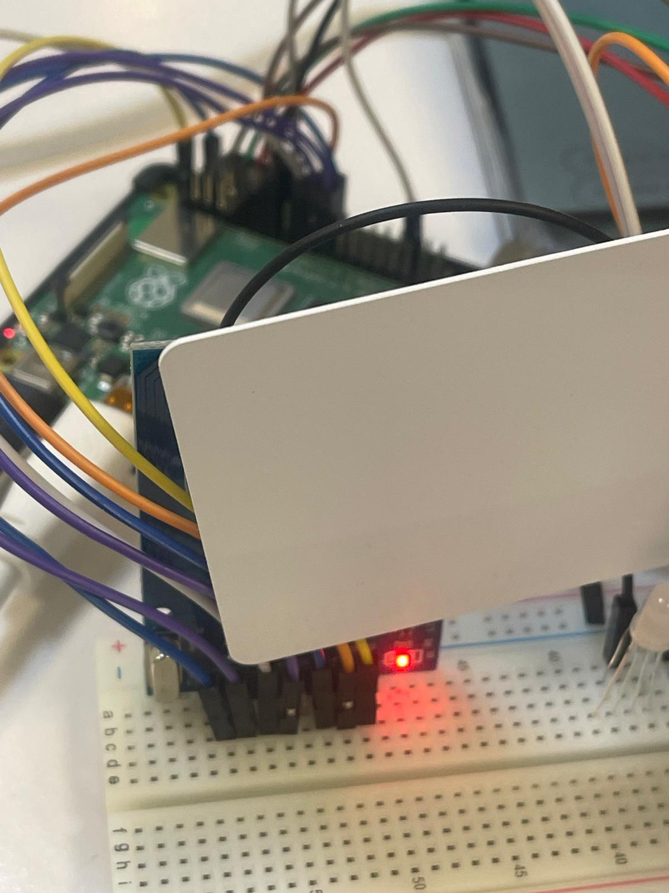
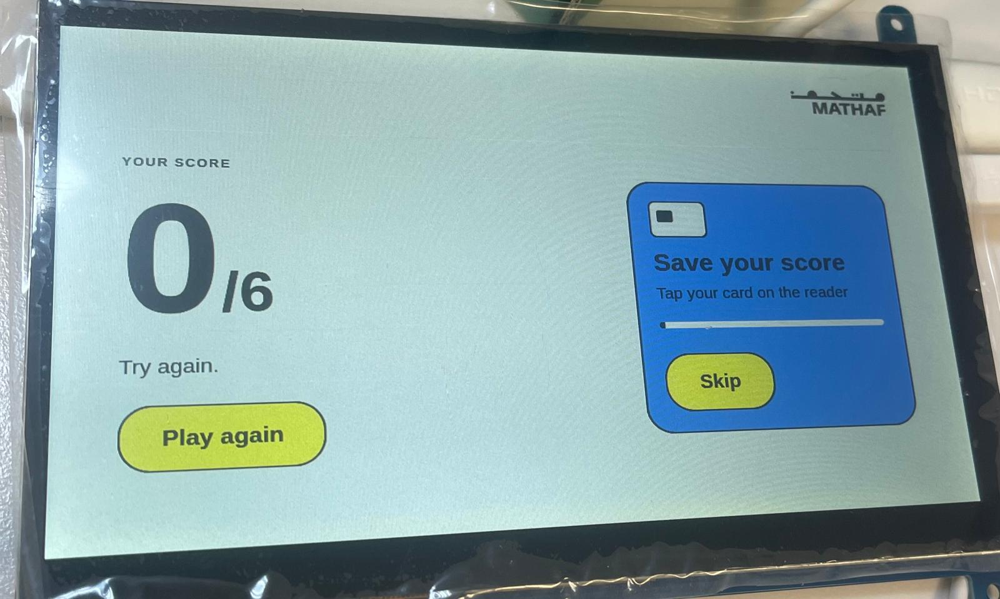
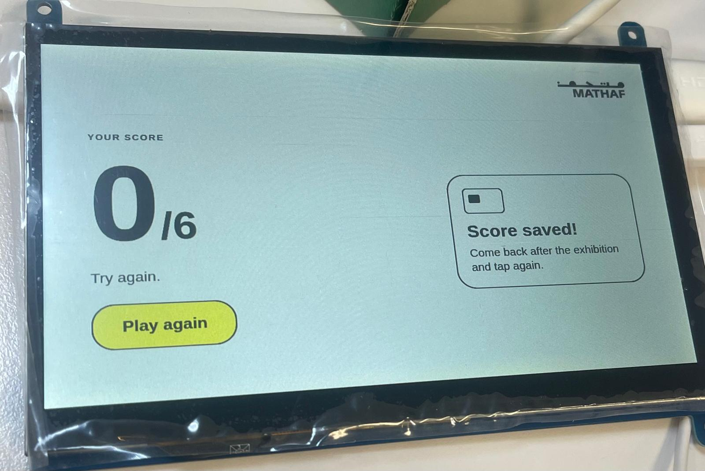
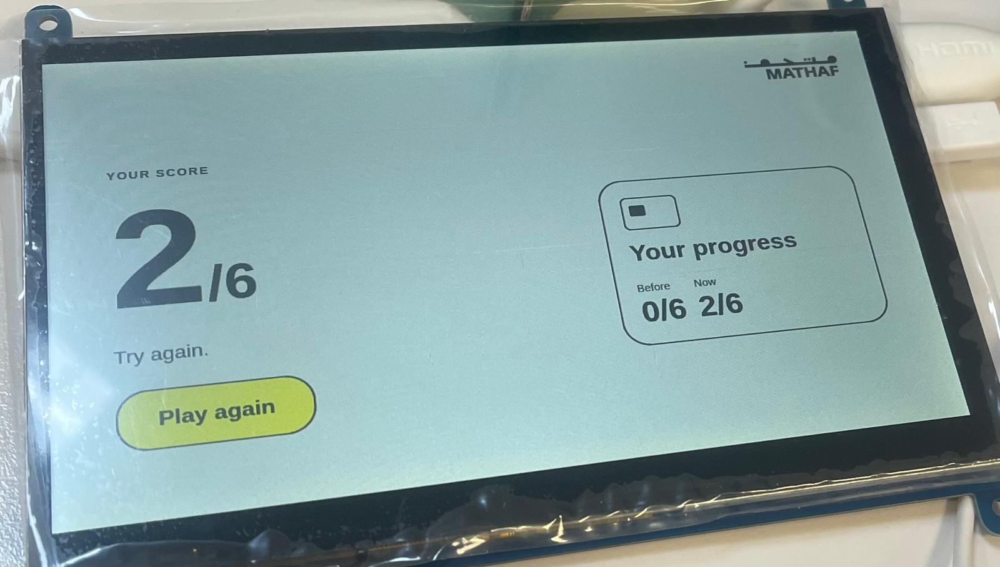
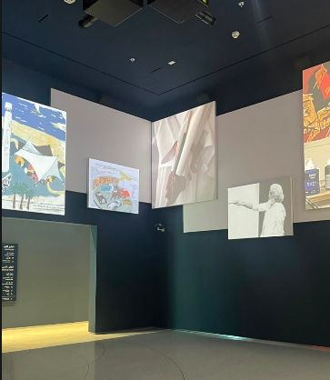
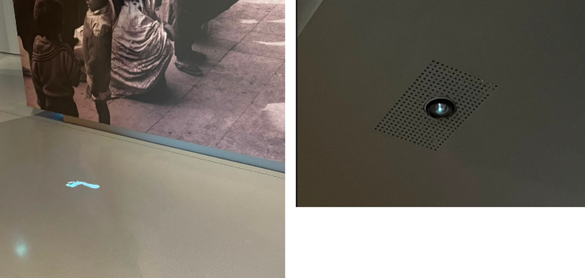
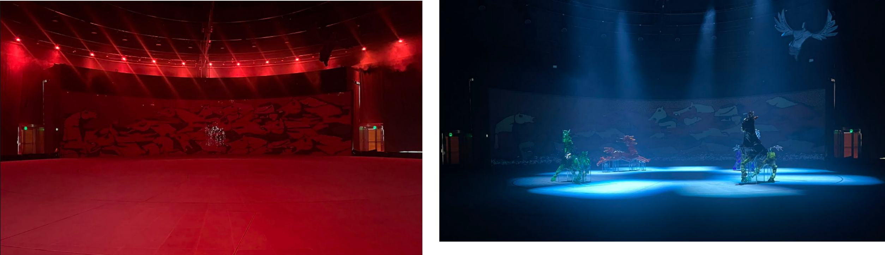
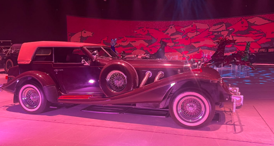
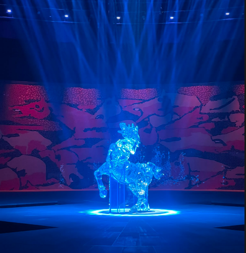

This week, we continued working on our prototype project from last week. We decided to add an optional feature that allows visitors to track their scores across their visit. The idea is that visitors take the quiz when they arrive at the museum, go explore the exhibition, and then take the quiz again at the end of their visit to see how much they learned. This tracking feature is optional and appears right after completing the quiz, where visitors can scan a card to save their results.
First, we connected the card scanner to our board and started testing, but we ran into connectivity issues because the scanner wasn't reading the cards properly. After a lot of troubleshooting, we realized the problem was in our pin mapping, the SPI/GPIO pin assignments defined in our code didn't match the physical wiring on the board. Once we updated the pin numbers in our code, the scanner worked successfully and read the cards without any issues.

With the hardware working, we built out the tracking logic. Each card has a unique ID, which we use to save and compare a visitor's score. We also needed to make sure the scores were separated by category. For instance, if a user takes a quiz in the "Title" category and later takes one in the "Year" category, the system shouldn't treat those as the same quiz or compare their scores directly, each topic has its own independent score history.



To keep the quizzes fair and effective, the pre and post visit quizzes generate different sets of questions, since our system reveals the correct answer whenever a visitor gets a question wrong. This also lets us test an interesting hypothesis, will visitors only pay attention to the specific artwork they got wrong, or does the initial quiz improve their overall focus across the whole exhibition?
We thought of some additional features that we can add like an analytics dashboard. Since we are already saving all the scores in a database, this data could show great insights, such as identifying which artworks visitors get right or wrong most often, and seeing if those results correlate with physical factors like artwork placement or gallery lighting.
The lawh wa Qalam: M.F hussain museum begins in a large entry space, displaying a projected video of Husain explaining his artistic philosophy, saying that he considers himself an artist rather than just a painter. This introduction is projected alongside a multi-projector system that casts dynamic images of his artwork and historical photographs.

The exhibition has a clever projection setup that projects animated footprints of Husain onto the floor in a continuous loop.

The most engaging and interactive section was Seeroo fi al Aardh, which showed lights and projectors. They had an incredible setup where platforms opened up from beneath the ground to lift out crystal glass horses alongside classic cars. The stage floor itself could also spin, allowing visitors to see the different horses and cars from every angle rather than just one view. Everything regarding the sound effects and soundtrack was really amazing, as the speakers delivered crystal-clear audio quality.


